01
Fresh Organic Produce
Crisp greens, vine-ripened tomatoes and seasonal picks restocked daily from growers we know by name.
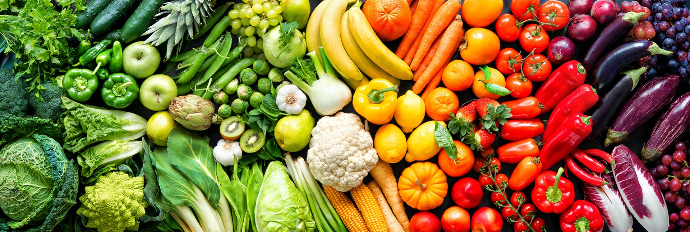
A Natural Foods Market · San Marcos, Texas
Organic produce, wholesome groceries, supplements and bulk goods — gathered by people who still know your name.
Produce delivered fresh and sourced responsibly.
Supplements, herbs and remedies you can trust.
Independent since day one — neighbors, not chains.
What you'll find
From the produce bins to the bulk wall, everything here is chosen to help San Marcos live a little greener.
Crisp greens, vine-ripened tomatoes and seasonal picks restocked daily from growers we know by name.
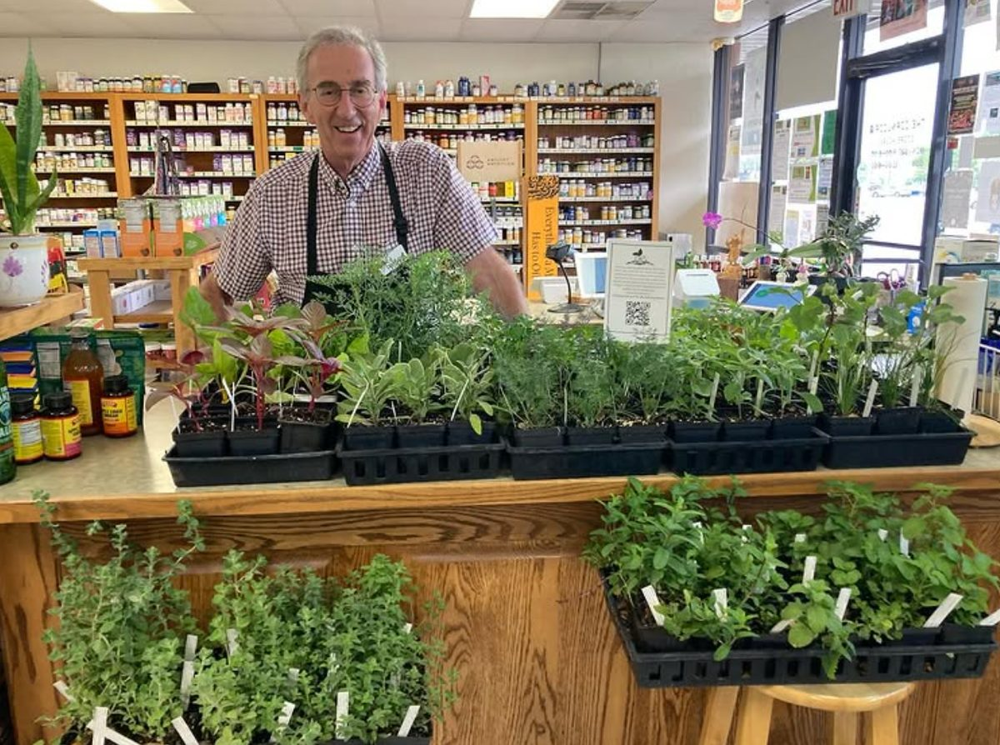
Vitamins, tinctures, herbs and remedies — with staff happy to help you find the right one.
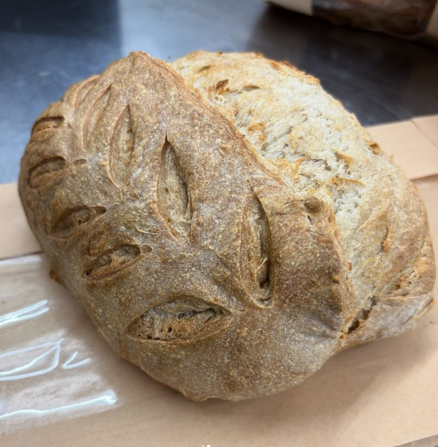
Crusty, hand-scored sourdough and daily-baked loaves — still warm if you time it right.
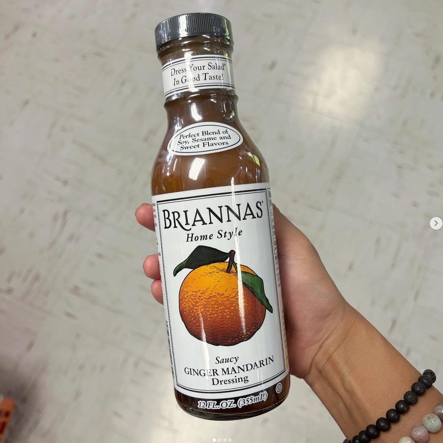
Honest pantry staples and small-label finds — dressings, sauces, snacks and bulk by the scoop.
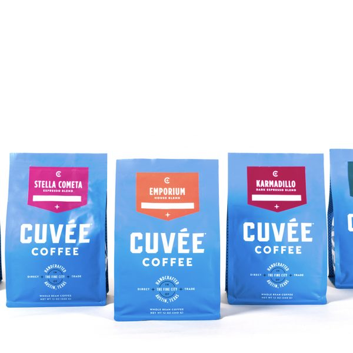
Small-batch roasts and local makers — including favorites like Cuvée Coffee.
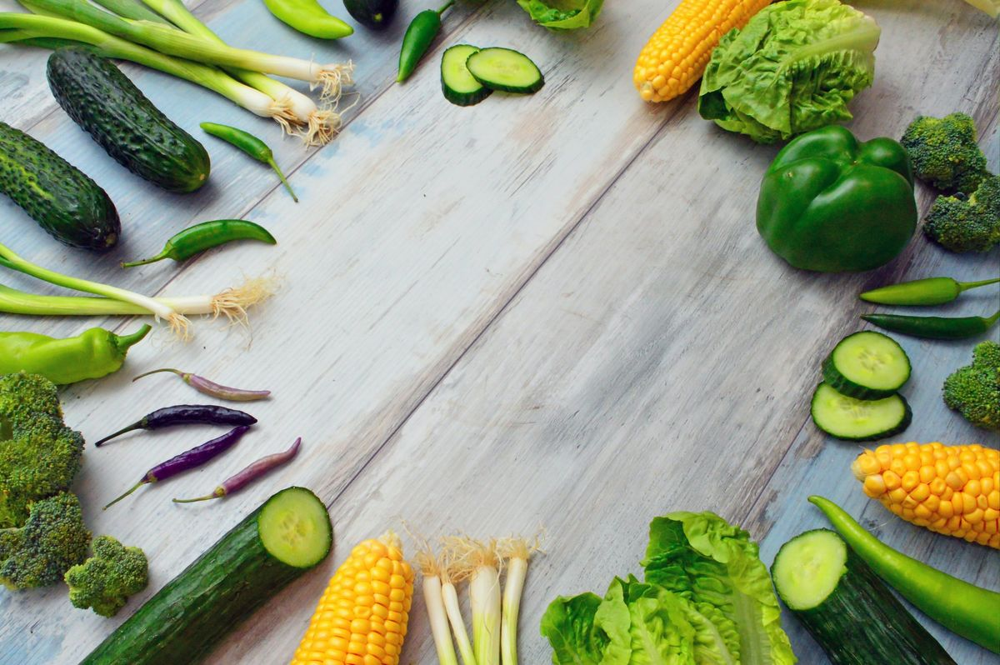
A growing aisle of plant-based staples, fresh meals and dairy-free favorites.
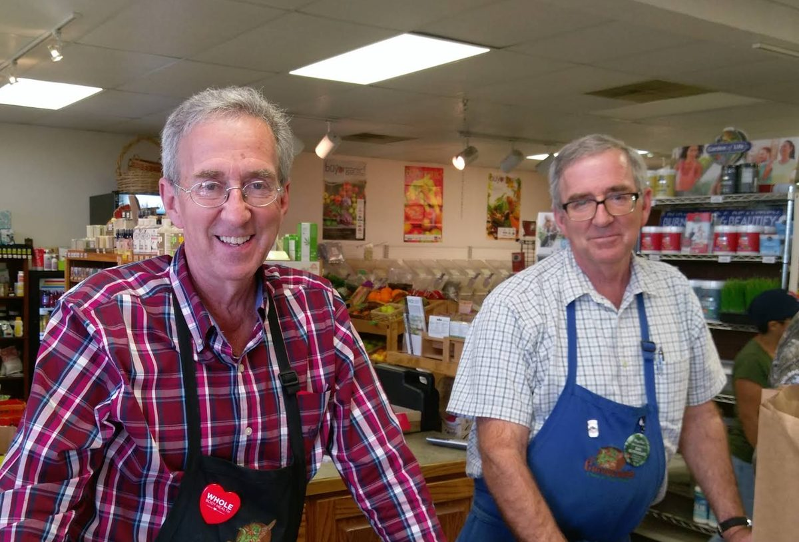
Our story
For more than thirty years, The Cornucopia has been San Marcos' home for natural foods — a small, lovingly run market where the produce is real, the advice is genuine, and regulars get treated like family.
Brothers and co-owners David and Dan Davis have poured sixteen of those years into the shop, keeping it independent and the shelves stocked with the kind of wholesome goods you simply can't find at the big-box store down the road.
A community gem — knowledgeable, friendly staff and the best selection in town.
Step inside
Hover to take a look around — from the body-care shelves to the bulk wall and the friendly faces behind the counter.
From our shelves & kitchen
A little taste of what our community blends, bakes and brings to the table.
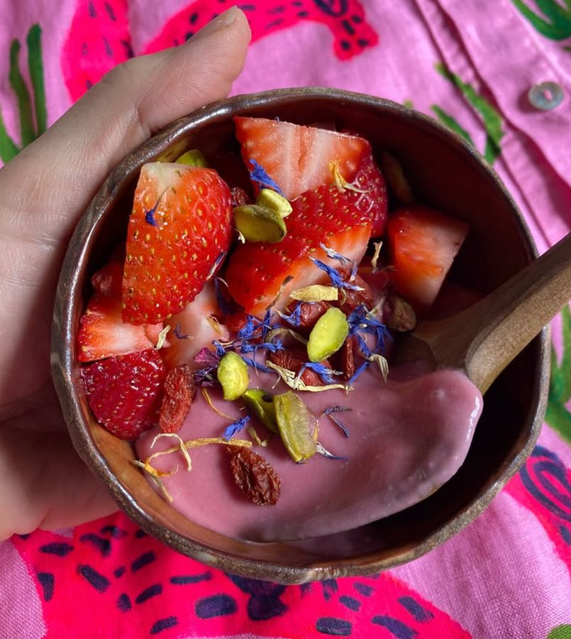
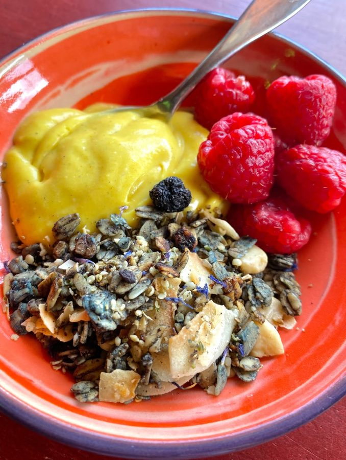
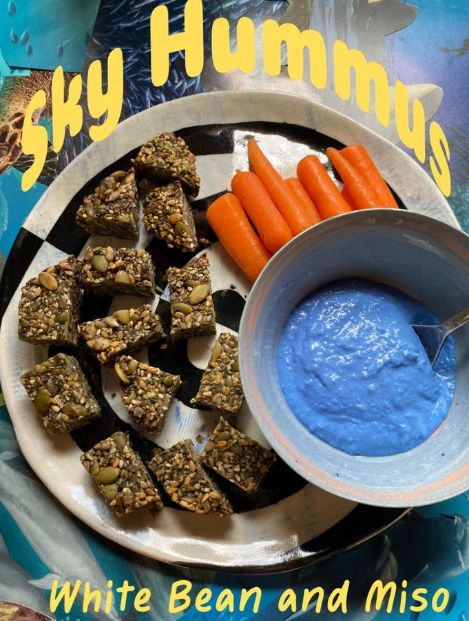
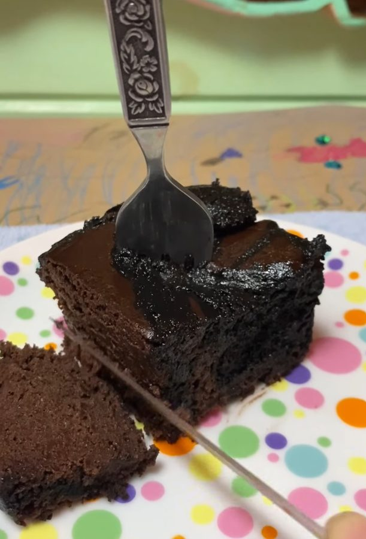
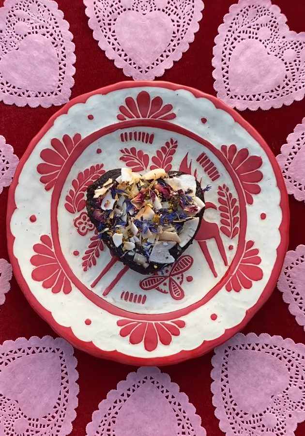
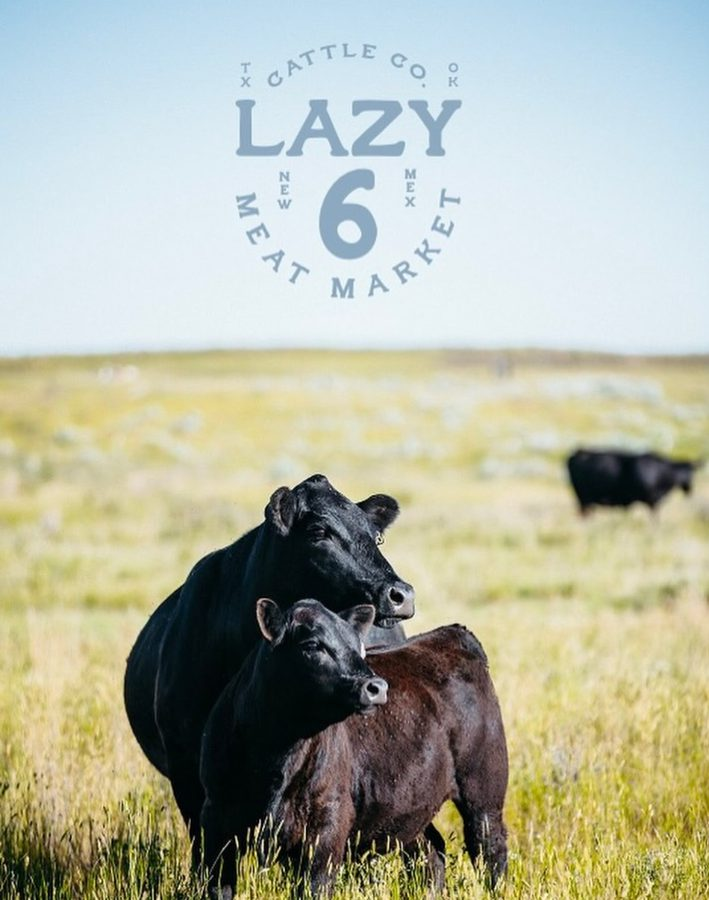
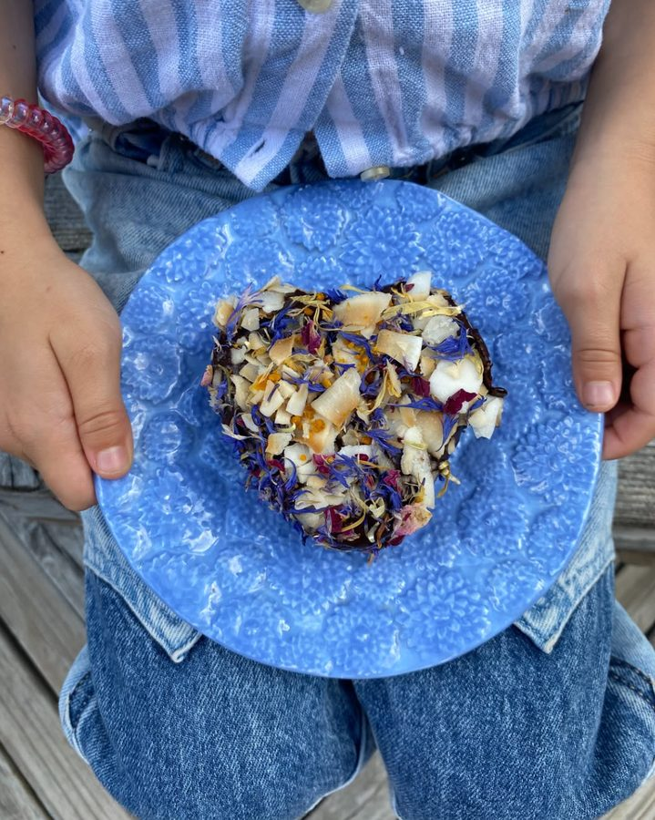
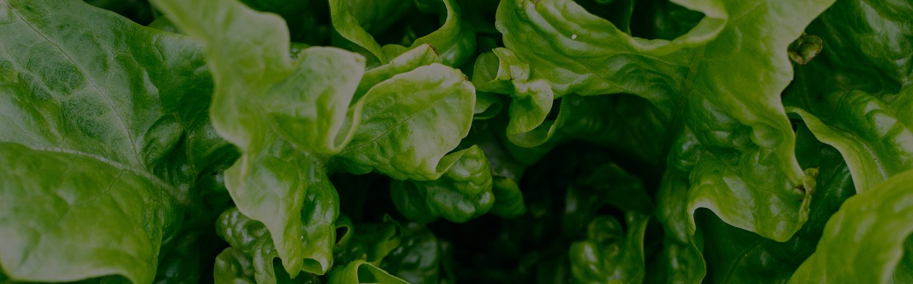
Stop in to see what just arrived — produce, bulk refills and weekly local finds.
Come say hi
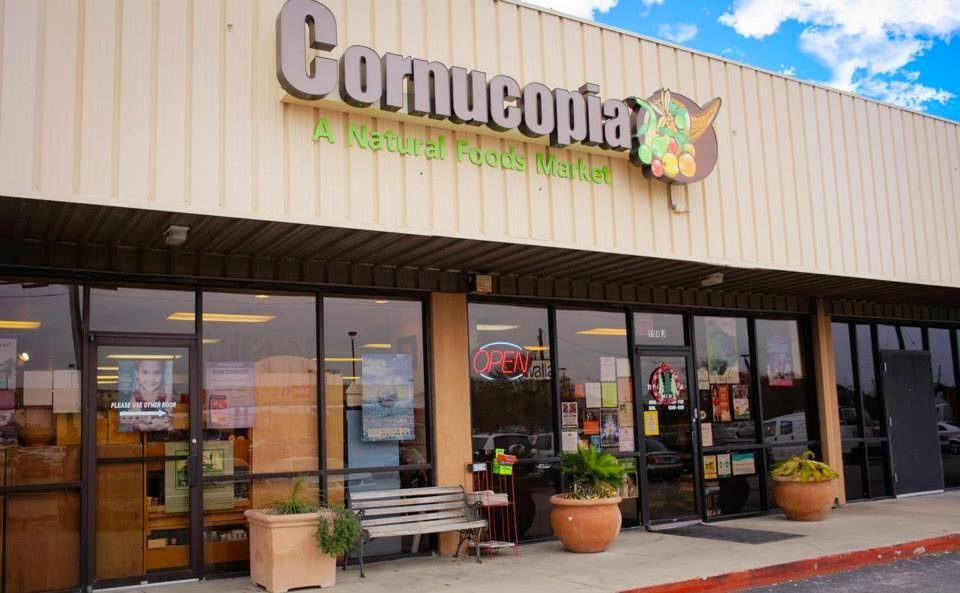
Monday – Saturday
9:00 am – 8:00 pm
Sunday
12:00 pm – 6:00 pm